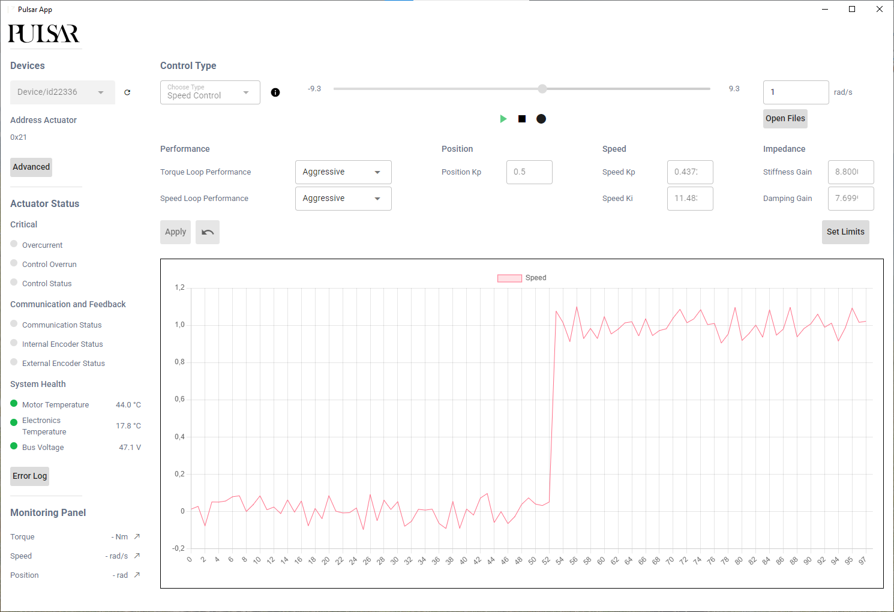

Pulsar Desktop App
Note
Currently the Desktop App works only for Real Actuators, not for Virtual ones
The Pulsar Desktop App provides the simplest way to get started with a Pulsar Actuator. It offers a graphical interface (GUI) to configure, control, and monitor the actuator without writing any code.
This tool is ideal for: - Quick testing and tuning actuator parameters - Visualizing data such as position, speed, and torque - Running diagnostics without using scripts
⚙️ System Requirements
- Connection: The actuator must be powered and connected directly via USB
- Compatibility: Tested on Windows
Linux and macOS support is experimental and currently under review
At this stage, the app supports controlling one actuator at a time.
📦 How to Get the App
The app can be downloaded from HERE
🚀 Key Features
- Browse and connect to available actuators via USB
- Switch between control modes: Speed, Position, Torque, and Impedance
- Change control parameters (e.g., position Kp, torque limits)
- View real-time plots of actuator feedback
- Run basic motion sequences interactively
🔍 Learn by Doing
To walk through your first experience with the app, check out the Quickstart Guide.
It covers:
- Powering and connecting your actuator
- Using the GUI to change control modes and parameters
- Safety tips for live testing
- Interacting with the actuator in real-time
🖼 Interface Preview
